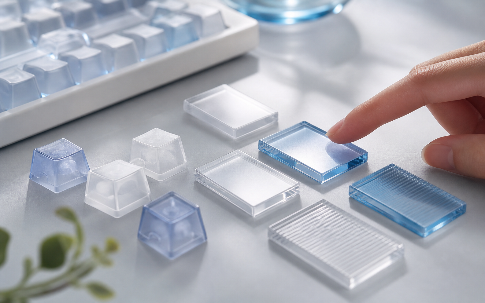
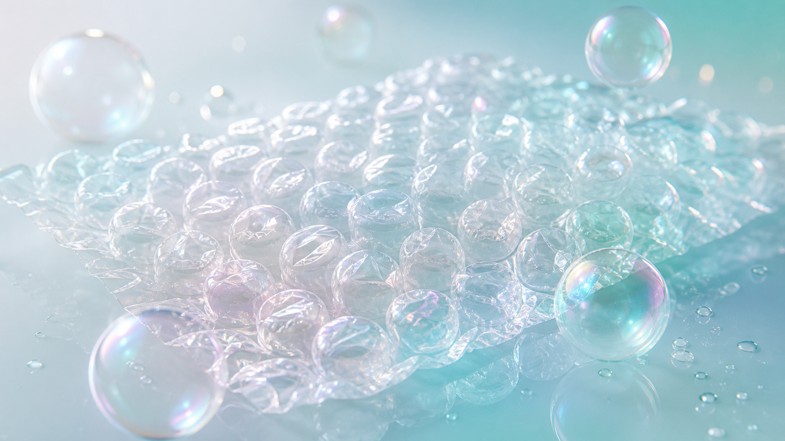
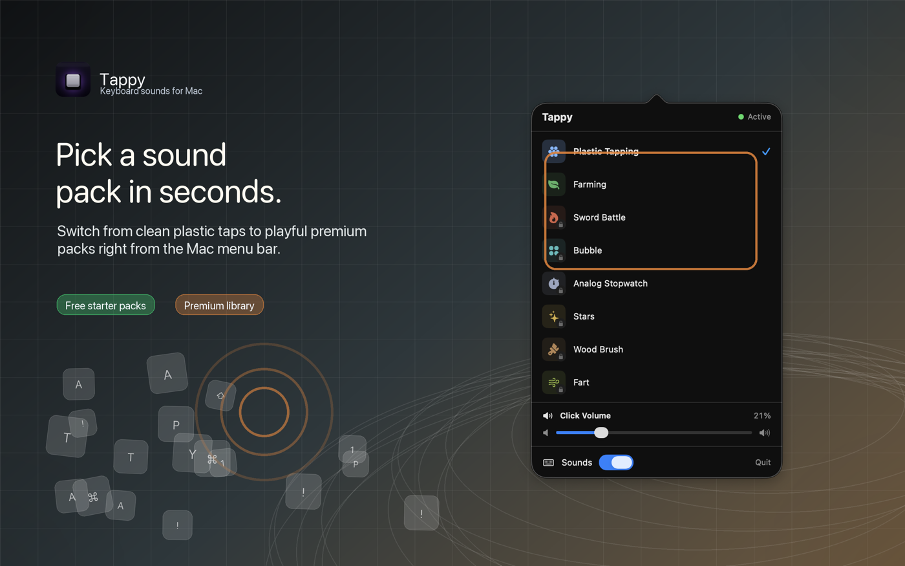

Plastic Tapping
Light, glossy taps.
A clean ASMR keyboard sound with short, low-latency hits for everyday typing.
ASMR keyboard sounds for macOS
Turn everyday typing into crisp, calming ASMR. Tappy adds responsive keyboard sounds to your Mac, switches sound packs from the menu bar, and keeps every keystroke local.
Soft taps, clicks, bubbles, and textured cues make typing feel more satisfying.
Choose ASMR packs, preview sounds, and adjust volume without opening a full app window.
Tappy uses physical key events for sound feedback and does not upload typed text.
ASMR pack graphics
Tappy includes glossy plastic taps, soft bubble pops, and precise analog ticks for different kinds of focused ASMR typing.

A clean ASMR keyboard sound with short, low-latency hits for everyday typing.

Glossy pops and airy blips for a lighter, softer ASMR typing feel.
Compact clockwork clicks for precise, focused, tactile keyboard feedback.
Daily rhythm
Letters, space, return, delete, and modifiers each get purpose-built sounds with a tactile ASMR feel.
Move from clean plastic taps to organic textures, clockwork clicks, bubbles, and starlit cues.
A compact popover keeps the important settings close without taking over your screen.
ASMR sound packs
Tappy turns ASMR sound selection into a calm, scannable menu. Preview a pack, set the volume, and get back to typing.

Free download, paid ASMR packs
Start with the notarized Mac app, then buy the one-time ASMR pack unlock through Gumroad. After purchase, paste your license key into Tappy to unlock premium textures like Bubble, Wood Brush, Stars, and Analog Stopwatch.
One-time purchase. Secure checkout and license delivery by Gumroad.
Release
The site is deployed from GitHub to Vercel. The DMG is attached to GitHub Releases, signed with Developer ID, and accepted by Apple notarization.
Tappy.dmg